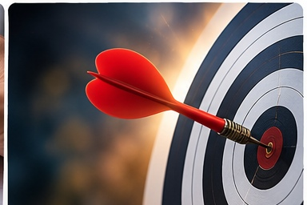

تنظيم الوقت
عندما ننظم وقتنا تصبح أيامنا أهدأ، وأعمالنا أوضح، ونجاحنا أقرب.
ما أول فائدة تخطر في بالك عندما تسمع عبارة تنظيم الوقت؟
الوقت نعمة ثمينة
الوقت مورد لا يعود، لذلك نستفيد منه عندما ننتبه إليه ونحسن استخدامه.
لماذا لا نستطيع تعويض الوقت الضائع بسهولة؟
أبدأ بتحديد هدفي

من يعرف هدفه يعرف أين يوجّه جهده، ولذلك يكون عمله أوضح وأسرع.
ما الهدف الذي تريد إنجازه اليوم أو هذا الأسبوع؟
أخطط ليومي
كتابة خطة بسيطة لليوم تساعدني على معرفة ما سأفعله ومتى سأفعله.
ما الأعمال التي يمكنك أن تكتبها في خطتك اليومية؟
أكتب ما أنجزه
قائمة الإنجاز تجعلني أتذكر واجباتي وتشعرني بالرضا كلما أكملت مهمة.
كيف تشعر عندما تضع علامة صح على مهمة أنجزتها؟
أرتب أولوياتي
ليس كل شيء له الأهمية نفسها؛ أبدأ بالأهم ثم أنتقل إلى ما بعده.
أيّهما أولى: الواجب المدرسي أم اللعب الطويل قبل إنهائه؟
أبتعد عن المشتتات
كثرة الهاتف والألعاب والتطبيقات قد تسرق وقتي من دون أن أشعر.
ما أكثر شيء يشتت وقتك عادة؟
أنجز خطوة خطوة
المهمات الكبيرة تصبح سهلة عندما أقسمها إلى خطوات صغيرة مرتبة.
ما المهمة التي يمكن تقسيمها إلى خطوات بسيطة؟
أخصص وقتًا للدراسة
عندما أحدد وقتًا واضحًا للدراسة أكون أكثر التزامًا وأقل تسويفًا.
ما الوقت المناسب لك للدراسة كل يوم؟
أوازن بين الواجب والراحة
التنظيم الجيد لا يعني الدراسة فقط، بل يعني أيضًا الراحة واللعب والاهتمام بالنفس.
كيف توازن بين دراستك وراحتك في يومك؟
أنام مبكرًا
النوم الكافي يساعدني على النشاط والانتباه وحسن استثمار وقتي في الصباح.
ما أثر النوم المتأخر في دراستك واستيقاظك؟
أستعد من الليل
ترتيب الحقيبة والدفاتر والملابس من الليلة السابقة يوفر وقتًا ويقلل التوتر صباحًا.
ما الأشياء التي تستطيع تجهيزها قبل النوم؟
أحترم المواعيد
الوصول في الوقت المناسب يدل على الانضباط والجدية واحترام الآخرين.
كيف يساعدك الالتزام بالوقت داخل المدرسة؟
أستخدم التذكير والمتابعة
المفكرة والملصقات والجدول تساعدني على تذكر واجباتي وعدم نسيانها.
أي وسيلة تذكير تناسبك أكثر: مفكرة أم ملاحظات أم جدول؟
النجاح ثمرة التنظيم
من ينظم وقته يخطو بثبات نحو النجاح ويشعر بالثقة والطمأنينة.
ما السلوك الواحد الذي ستبدأ به من اليوم لتنظم وقتك؟
السابق
الشريحة 1 من 15
التالي
⛶